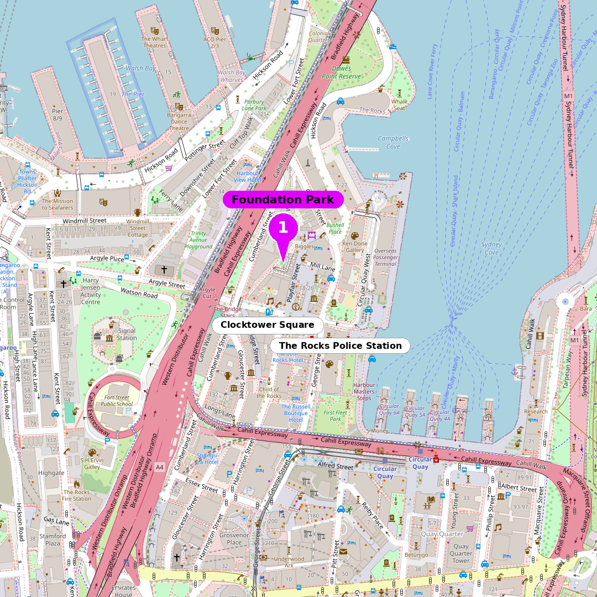

The International Smartphone Travel Photography Newsletter
Things to Do in Sydney: Bondi Beach and Foundation Park Photo Spots
Where to stand at Foundation Park, a walking tour of Sydney and a hotel by Darling Harbour
Wednesday, November 18, 2026
Welcome back, Pocket Lenser. Today's Pocket Lensers, Amit and Priya, 53 and 48, are heading to Bondi Beach in Sydney. Also inside: Cambodia beyond Angkor Wat, and where to stand at the Taj Mahal.
Places: Bondi Beach, Foundation Park, The Rocks and Darling Harbour, Sydney, Australia; Angkor Wat, Cambodia; the Taj Mahal, India; Pachar, Peru.
Today's challenge: move until a pillar, a branch or an archway partly blocks your subject, and shoot from there.
HOT LOCATION
Foundation Park, The Rocks, Sydney: where to stand for the photo

Photo: -wuppertaler, Wikimedia Commons, CC BY 4.0
Foundation Park
The Rocks, Sydney
Step through an unmarked doorway in The Rocks and you land inside Foundation Park, a small outdoor space where partially ruined historic terrace houses sit against a sandstone cliff. The City of Sydney's news feature "Secret Sydney: our city's hidden spots" singles it out as one of Sydney's genuinely overlooked places, and the numbers back that up: the longest side of the park measures just 30 metres, so most visitors walk straight past without knowing it exists.
Thirty metres end to end is a tight frame, which means your phone's standard or wide lens fills up fast. Work the contrast between the cliff face and the roofless walls by shooting close to one element and letting the other recede, and go vertical to capture the full height of both. A single step sideways can shift the whole composition, so take several before you pick your keeper.
Clocktower Square sits about 120 metres away, and The Rocks Police Station is roughly 150 metres in the other direction, so you can cover all three stops in a short loop. Save this one for a day you're already in The Rocks.
Getting there: Foundation Park is in the The Rocks area, about 120 m north of Clocktower Square and 150 m northwest of The Rocks Police Station. Walk north from Clocktower Square to find it.

Map: 1 Foundation Park. Map data © OpenStreetMap contributors (ODbL).
TOUR and STAY
A pay-what-you-like walking tour of Sydney and a hotel by Darling Harbour

Photo: Cadenc _moving, Unsplash
TOUR
BestFreeToursSydney: Best Free Tours Sydney! (Claim your FREE GIFT at the end!)
November 18, 2026, Bondi Beach, Sydney, Australia
BestFreeToursSydney runs a pay-what-you-like walking tour of Sydney that starts on 18 November 2026 and runs daily from that date. Over two and a half hours, a local guide walks you through the city's squares, gardens, and streets, weaving in photography tips alongside the history and food spots worth knowing about.

Pictured: Sydney. Photo: cogdogblog, CC0 public domain, via Flickr
Reviewers consistently single out the photography angle as the part that surprised them most, and the guides come across as genuinely knowledgeable rather than script-readers. Book it as your first full day in the city, and use the walk to clock the streets and corners you want to return to and photograph properly. View this trip
STAY

Photo: Simon_sees, CC BY 2.0, via Flickr
Hyatt Regency Sydney
Hotel in Sydney, AUD 301 per night (about US$203)
The Hyatt Regency Sydney is a five-star hotel at 161 Sussex Street in Sydney's CBD, sitting right next to Darling Harbour. Guests on Booking.com rate its location 9.2 out of 10, and the listing places it adjacent to Darling Harbour with the Zephyr sky bar and Dundee Arms pub both on site.
Darling Harbour is steps from the front door, so you can walk straight out and start shooting. Rates shown are Booking.com rates for 23 to 25 December 2026 and change by date. View this stay
YOUR SHOT
Reader photo: leading lines beside the Urubamba River at Pachar, Peru
YESTERDAY'S FEATURED ENTRY ON THE THEME: Leading Lines

Railway tracks and yellow bridge beside the Urubamba River at Pachar, Peru. Photo by Niamh.
TODAY IN FOCUS
Travel news: Cambodia beyond Angkor Wat, Japan and South Korea for 2027, strikes in Europe
Cambodia is using AI to pull tourists beyond Angkor's famous temples
Destinations outside Angkor rarely get a look-in on most people's phones, but Cambodia wants to change that. The country is using AI and immersive technology to draw international visitors toward cultural sites they'd never otherwise find, according to Travel And Tour World. Point your camera somewhere genuinely unfamiliar this trip and you might bring home a shot nobody else has. View ->

Photo by ahmetyuksek on Pixabay
Japan and South Korea are shaping up as the trips everyone wants in 2027
According to kimkim's booking data, South Korea has seen a 61% rise in bookings and Japan a 36% increase since 2025, pointing to strong and growing traveller interest in both destinations heading into 2027 (via Travel And Tour World). Both countries reward patient, close-up phone photography, from quiet temple courtyards to narrow street-food alleys, so now's a good time to start building a shot list. View ->
European strikes this week could scramble connections across Spain and beyond
Travel And Tour World reports that a wave of European travel strikes, running November 17 to 22, 2026, threatens domestic connections, international transfers, and sightseeing plans across Spain and other affected countries. If your itinerary touches Europe on the way home, check with your carrier today before you assume the schedule holds. View ->
SHOT SCHOOL
Video: where to stand for the best photo of the Taj Mahal
Taj Mahal, Agra (Mausoleum): Best Photo Spot and Where to Stand

THROUGH THE LENS
Phone tip: point your phone somewhere unfamiliar
Cambodia's push to get visitors photographing lesser-known cultural sites makes one thing clear: the shot nobody else has usually starts with pointing your phone somewhere unfamiliar. Most people tap the shutter at the obvious subject. Try tapping it at the wall behind that subject, or the shadow a carved stone throws across a courtyard, and your phone's camera will meter for that surface instead, which means it sets the exposure, the brightness balance, for something genuinely different.
Shoot the same spot twice: once with the subject centred, once with it pushed to the far edge of the frame.
CHANGING FOCUS
Phone camera news: Oppo Find X10 Ultra, Xiaomi, and a brighter sensor filter
HARDWARE
Oppo's Find X10 Ultra is dead, but its cameras may live on
The Find X10 Ultra has been cancelled, according to Weibo tipster Digital Chat Station, but its 200MP main camera sensor and 100MP selfie camera could transfer to a future Oppo flagship. If you shoot with an Oppo Ultra, the Find X9 Ultra may be your last chance to ride that line. View ->
SOFTWARE
Xiaomi's Essential Moment mode forces two focal lengths, three strong looks
Essential Moment locks you to a 35mm Documentary setting or a 75mm Portrait setting, then pushes one of three film-style presets: a punchy B&W Film, a very warm Iconic CCD, or a distinctly cool Modern Vintage. Pick the wrong style for your light and the results suffer, so choose before you shoot. View ->
INDUSTRY
A Bayer filter replacement could send 2.5x more light to your phone camera
Metalenz bought Israeli startup PxE Imaging, whose Holocoder layer bends light instead of absorbing it, delivering 2.5x more light to a standard sensor than a Bayer filter does. No production phone has it yet, but PxE's technology could reach devices as soon as end of next year. View ->
FRAME THE MOMENT
Photo challenge: patterns and repetition
Today's theme: Patterns and Repetition
Point your lens at a row of identical shapes, lock them edge-to-edge in the frame, then step slightly to one side so the lines converge toward a single point rather than running flat across the shot. One element that breaks the pattern, a gap, a crack, a smudge, pulls the eye and gives the whole image a reason to exist.
Shoot it anywhere in the world. The theme is all that matters.
Shot on a smartphone. One entry per reader. Deadline: midnight, your local time. Submit your entry ->
Your Travel
Send us your trip
Share your trip with Pocket Lens. Each day we build the issue around a real reader's journey. Submit yours and tomorrow's issue could be about your trip.
Keep exploring: all Pocket Lens issues and the free shot maps.
Get Pocket Lens in your inbox every day.
Until next time, keep shooting.
More maps, guides and resources at xdatrys.com
© 2026 Pocket Lens by Xdatrys
Xdatrys LLC, 44 Rue Pasquier, 75008 Paris VIII, France